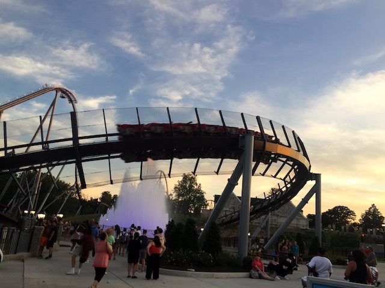
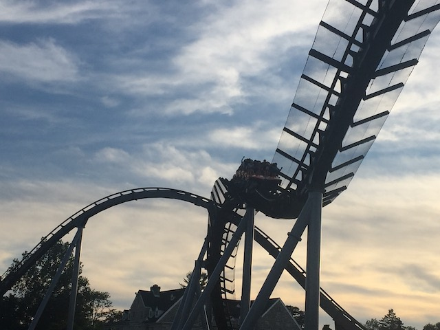
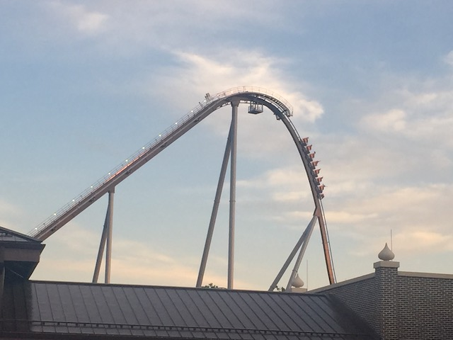
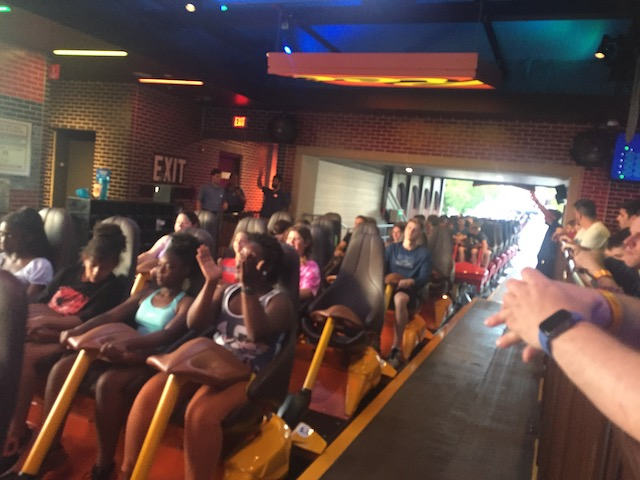
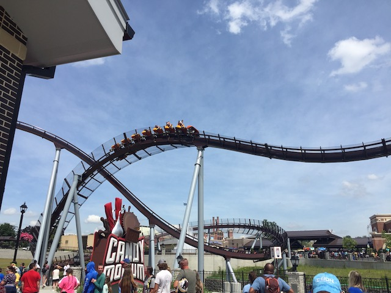
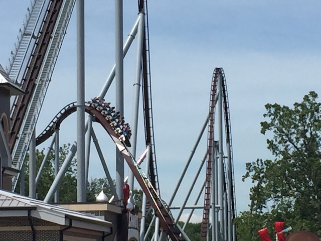
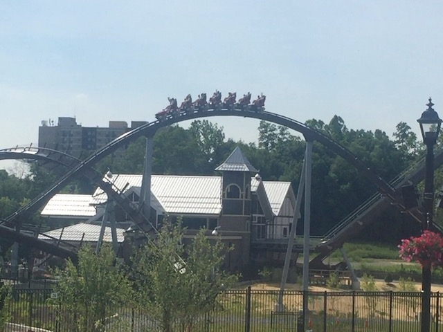
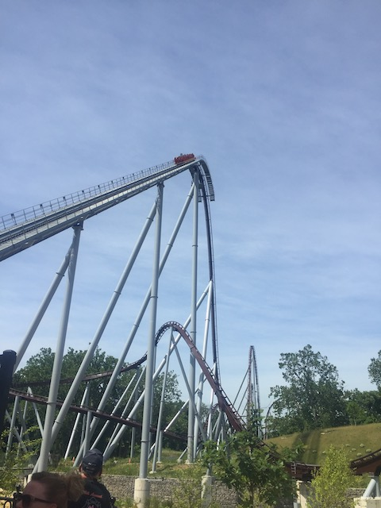

| |
Candymonium Review

We're here at Hersheypark. Today's ride we'll be reviewing for you is Candymonium. This is the parks B&M Hyper (as opposed to their Intamin Hyper, Skyrush, which is honestly MUCH better). And....it's a fun ride. I'm not gonna lie. This is definately one of the weaker B&M Hypers and is towards the bottom of that barrel. But hey. It's still a fun ride. So yeah. Let's get on. Hop in the trains, pull down the clamshell restraints (these still are some of the best restraints out of any coaster. Not gonna lie. These restraints definatly beat Skyrush's restraints), and we're off! We climb up the lifthill. Not much of a view here. The hills of Candymonium (BTW, it's not a pretty hyper coaster. Sorry, but brown just isn't a good color for a steel coaster. I know its meant to be the same color as chocolate. But still) and the green fields of Pennsylvania. Pretty bland in all honesty. But anyways, we reach the top and head down the first drop. It's not quite as agresive as the first drop on Skyrush, but it's still a solid first drop. You gain A LOT of speed going down, and even some nice floater air. Pretty standard B&M Hyper First Drop. But those are pretty much always really good. It's just part of being a hyper coaster. We then soar into Airtime Hill #1. While going up here, it's clear that this is one of the weaker airtime hills. Not saying its bad or anything. But....the airtime is far stronger on something like Goliath @ SFOG (Still the best B&M Hyper I've ridden). But hey. There's still some decent floater air. We then head up into this turnaround. No, it's not a Hammerhead found on your average B&M Hyper. It's....the weird turnaround they have on Intimidator. Pretty sure they just stole this element from that ride. And....it's a fun element. Gives us a few laterals. Particuarly with the change in direction regarding the banking going up. But the Hammerheads just are more fun. But hey! We're still going fast and still going strong! And then.....HISS!!! BOO!!! TRIMS!!! Yeah. I know its purposeful. But....it still really hampers the ride. There would be FAR more airtime on this next airtime hill if it wasn't for this trim. And as such, there's barely any airtime (even standard B&M Floater Air). This is further demonstrated by how much smaller the next hill is. Yeah. There's still some airtime here. But.....I'm gonna be honest. This part of the ride, this airtime hill, it feels like it came from Hollywood Dream. That's still a fun ride. But it's undoubtedly my least favorite B&M Hyper (when its running forewards). Then head into an upward helix. Yeah. This is fun. But it just doesn't ahve the same agressive bite that the upward helix on Nitro. This is fun, but far more mild. We then bank to the left and drop back down to the ground. Fun little hill. Go over another airtime hill. Wee! Mild floater air! We then head around a big low to the ground turn. It's not amazing on the ride. But this element looks absolutely gorgeous. Especially with it going around the fountain in front of the entrance. We then head up into a banked airtime hill. There's not much airtime here. Or laterals for that matter. But hey. There's a nice little pop. We then head up into a little hill and.....INTO THE BRAKE RUN!!!? Is that seriously it!? Technically no. We then head down another small curved drop, and....now we glide into the final brake run. So yeah. Not only is Candymonium one of the weaker B&M Hypers, but it's also one of the shortest. Honestly, I think aside from Hollywood Dream (forewards), this ranks dead last. But like I said, it's still a fun ride worth checking out if you're at Hersheypark.
8/10
Location: Hersheypark
Opened: 2020
Built by: B&M
Last Ridden: June 25, 2021
Candymonium Photos












Home
|